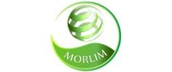
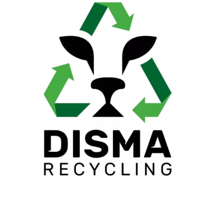
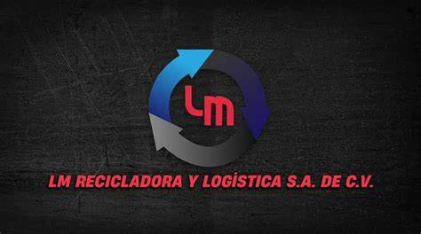
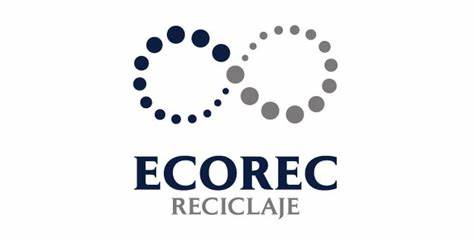

Si eres de algún lugar fuera de Ciudad Juarez, Chihuahua, Mexico. Abajo aparecen los centros de reciclaje más populares de la ciudad, sus ubicaciones, sus contactos y los materiales que aceptan, si no eres de esta ciudad puedes dar click en el botón de abajo para buscar lugares como estos en tu ciudad
Si eres de algún lugar fuera de Ciudad Juarez, Chihuahua, Mexico. Abajo aparecen los centros de reciclaje más populares de la ciudad, sus ubicaciones, sus contactos y los materiales que aceptan, si no eres de esta ciudad puedes dar click en el botón de abajo para buscar lugares como estos en tu ciudad
Reciclados MORLIM ----- Ubicación: Calle Manzanillo 10720, Granjas Polo Gamboa ----- Teléfono: 656 454 0120 ----- Acepta: Plásticos, cartón, tarimas, metales, cobre, aluminio, entre otros materiales no peligrosos.
360 Recupmateriales y Accesorios----- Ubicación: Nahoas 1236, Aztecas. ----- Teléfono: 656-210-3727 ----- Acepta: Papel, cartón y plástico.
Disma Recycling S de RL de CV ----- Ubicación: Tuna 7125, Héroes de la Revolución ----- Teléfono: 656 753 6290 ----- Acepta: Plásticos y metales, especialmente para la industria maquiladora.
LM Recicladora y Logística S.A de C.V ----- Ubicación: Carretera Panamericana Km. 23, Valle Dorado ----- Teléfono: 656 743 7660 ----- Acepta: Materiales ferrosos y otros metales.
Ecorec Reciclaje ----- Ubicación: Eje Vial Juan Gabriel 8750, Nuevo Hipódromo ----- Teléfono: 656 633 0718 ----- Acepta: Metales, electrónicos, y baterías.
Alium Mercapro ----- Ubicación: Av. Tecnológico 7260, Infonavit Tecnológico ----- Teléfono: 656 649 5940 ----- Acepta: Papel, cartón, plástico, metales y madera.